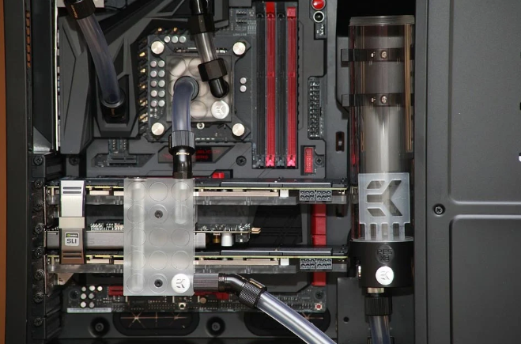

El disipador de la CPU un elemento o pieza cuya misión es extraer el calor que genera el procesador. Cuando hablamos de disipador, estamos refiriéndonos a un componente que utiliza un elemento activo (ventilador) o pasivo (aletas de aluminio) para extraer el calor a través del aire.
¿Por qué la CPU se calienta? Para dar la explicación técnica, tenemos que atender al Efecto Joule, un fenómeno que explica la manera en la que un componente eléctrico genera calor. Este fenómeno ocurre porque los electrones están en movimiento en un conductor, por lo que aumenta la temperatura a causa de la energía cinética y porque los electrones chocan entre ellos.
De este modo, en cuanto el procesador consume más energía, desprende más calor. Pero, ¿cuándo y por qué consume más energía?
Cuando cargamos de trabajo a la CPU (programas profesionales, videojuegos, etc.). Al hacer overclock, ya que subimos su frecuencia. Volviendo al disipador CPU, se trata de una pieza que está compuesta por:
Para entender cómo funciona un disipador de aire hay que tener en cuenta la intervención de la pasta térmica como elemento esencial para esa transferencia de calor del procesador al disipador:
La explicación sencilla de la refrigeración líquida es que es un sistema que hace uso de un líquido o fluido para extraer el calor del procesador, conducirlo por sus tubos y expulsarlo a través de los ventiladores.
Un kit de refrigeración líquida AIO (All In One, o Todo En Uno) está formado por lo siguiente:
Bloque y bomba de agua. Se instala encima del IHS de la CPU, aplicando pasta térmica de igual manera que en el disipador. En estos kits, el bloque y bomba van juntos, pero en un kit de refrigeración custom son 2 piezas que funcionan por separado.
La bomba sirve para ejercer fuerza en los tubos y, así, empujar el líquido o fluido por el circuito.
Tubos. Son las vías o “carreteras” por las que circula el fluido caliente o frío. Radiador y ventiladores. El líquido caliente proveniente de la CPU llega al radiador y los ventiladores equipados en él expulsan el calor fuera de la caja. De esta manera, se enfría el líquido y se devuelve a la CPU mucho más fresco para refrigerarla.
Es la opción mayoritaria por su relación calidad-precio y por su ligereza. No es el material que mejor conduce, pero da un rendimiento más que de sobra para lo que necesitamos.
Siendo un metal con una gran conductividad térmica, ha sido sustituido porque su precio es alto y su peso también. Al final, el cobre no disipaba mucho más que un bloque de aluminio, y ha quedado relegado a estar presente en las tuberías de calor.
Los disipadores activos son los que equipan un elemento móvil, como es el ventilador.
No incorporan ningún elemento eléctrico, así que disipar el calor a través de la convección natural, siendo meros bloques con aletas.
De torre. Se denominan de esta manera porque el bloque de aluminio está dispuesto de forma vertical y se expulsa el aire por el/los ventilador/es horizontalmente. Suelen tener una capacidad de refrigeración muy buena, pero el tamaño puede ser una desventaja.
Bajo perfil. El bloque de aluminio está dispuesto apaisado, u horizontalmente, de modo que el ventilador expulsa el aire hacia arriba. Viene a ser el disipador Intel o AMD de stock, para que os hagáis una idea.
120 mm. Es el tamaño estándar, aunque encontramos opciones con un ventilador más pequeño.
140 mm. Un ventilador de esta medida precisará de una caja grande porque su bloque no será pequeño. Puede funcionar a menos RPM que los de 120 mm y disipar mejor porque son más grandes. Sin embargo, son más caros y no siempre salen a cuenta.
Es el turno de clasificar la refrigeración líquida para PC, la cual vamos a diferencias de forma muy simple. Decimos esto porque las refrigeraciones custom son un mundo aparte, habiendo grandes diferencias entre tubos (blandos/rígidos), bombas (D5/DDC), bloques de agua (acetal/plexi), depósitos, etc.
Es la refrigeración líquida simplificada, la cual hemos explicado antes. Se caracterizan por su cerrado hermético, por lo que solo hay que mantener el radiador y la pasta térmica, aunque hay modelos que nos permiten sustituir el líquido.
Apta para entusiastas y “modders” que quieren una refrigeración líquida completa, la cual es la más longeva de todas. Con ella lograremos la máxima refrigeración habida en el mercado (tanto para CPU, como para GPU), pero exige unos conocimientos amplios en la materia, así como un mantenimiento no apto para principiantes.
Es el radiador más simple, el cual puede ser interesante para cajas pequeñas.
Suele ser el estándar, además de venir acompañado de ventiladores de 120 o 140 mm.
Suelen ser de 360 mm (3 ventiladores de 120 mm), y son considerados como la “gama alta” en refrigeraciones líquidas
Es el tamaño base y funciona más que de sobra para casi cualquier persona.
Menos común, y tiene un precio alto. Además, deberemos tener una caja PC grande si el radiador equipa 2 o más ventiladores de esta medida.